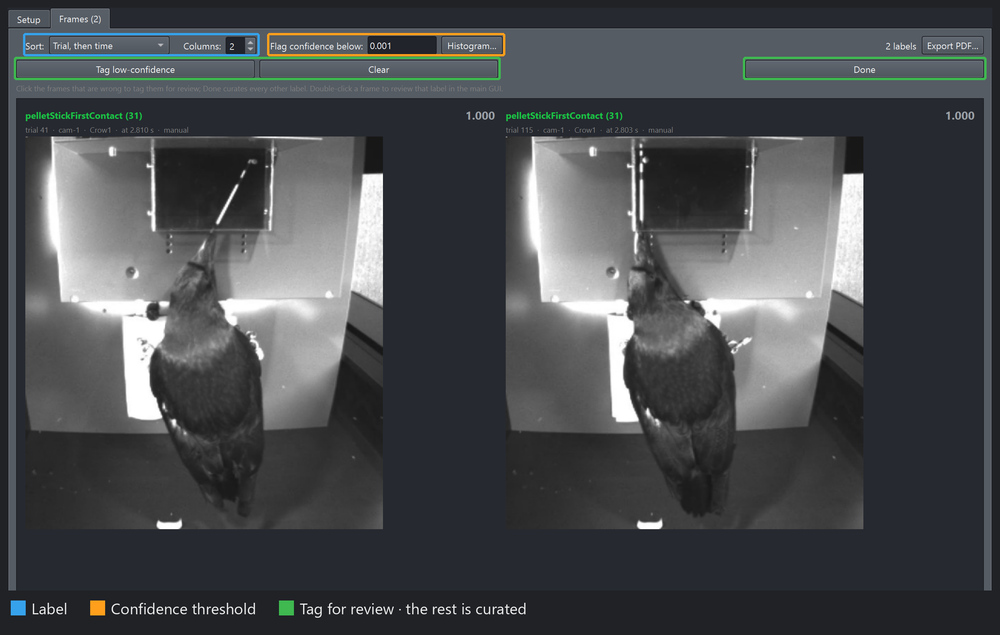
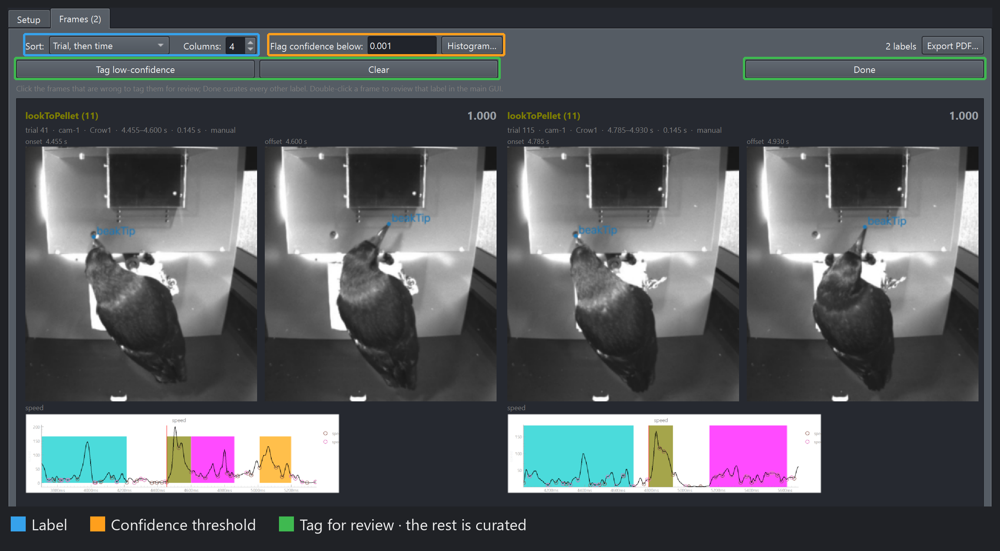
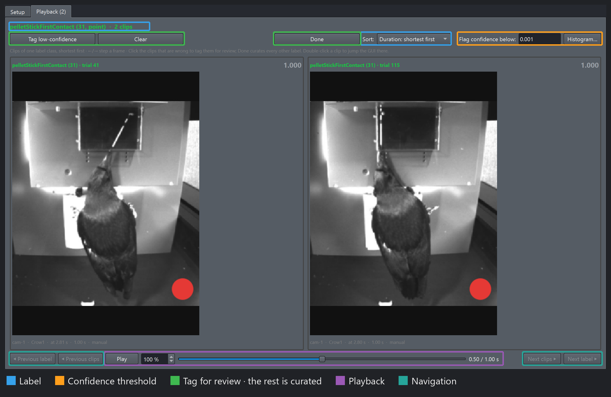
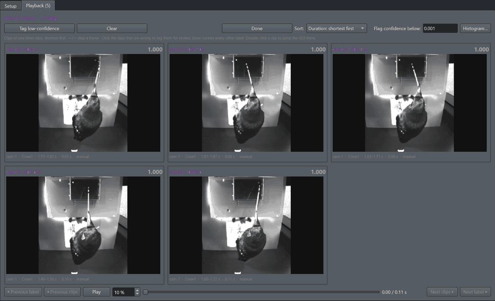

Review grids#
Two buttons in the Curation section open review grids on the scope: Label grid view… freezes every boundary as a video frame, Video grid… plays the labels as clips. Both show many instances of one class together, which is what makes an outlier visible, and a click means the same in both: it tags the label for review, and Done curates the rest.
The screenshots below come from the Moll et al. 2025 template [Moll et al., 2025], a crow using a stick to reach a food pellet, on three of its behaviours: a point event, pelletStickFirstContact, the moment the stick first touches the pellet; and two state events, lookToPellet, the crow’s gaze moving from the stick dispenser to the pellet, and toss, a corrective movement of the stick’s orientation in the beak.
Label grid view#
{kind=link}

A point class: one tile per label, per camera, showing the event’s frame.#
{kind=link}

A state class: a double-width tile per label, its onset frame on the left and its offset frame on the right. The pose overlay follows the sidebar’s Pose section — here every keypoint but the beak tip is hidden and names are on — and the GUI’s speed panel is captured under each tile, the label’s span shaded and the onset marked in red.#
Label (blue) picks the class on screen when the scope holds several, and Sort its order — by trial, or by confidence lowest first, which puts every doubtful label on the first screens. Flag confidence below (orange) outlines every tile under the threshold in a thin red; Histogram… shows where the scores sit per class before you commit, and holds the confidence rule. Then the green row: click the tiles that are wrong to tag them for review, or Tag low-confidence, which turns every red-outlined tile orange in one press — the threshold’s hint becomes your tag. Press Done — every automated label on screen that is not tagged becomes curated, and the tagged ones stay automated for a closer look. A tile’s outline says which it is:
thick orange — tagged for review, by a click or by Tag low-confidence: stays automated after Done, and is the queue the detailed review walks
no outline — untagged: Done curates it
Tags are keyed by label, so re-sorting never moves one, and a click on either frame of a state tile tags the whole label. With a Label filter active, Done and Tag low-confidence reach that class only. Curating is not undoable; nothing reaches disk until you save.
A double-click jumps the main GUI to that boundary instead — the left frame of a state tile opens the onset, the right frame the offset — and into segment review or frame-by-frame review when the Curation section is in one. It leaves the tags as they were: click to tag, double-click to go and see. Export PDF… prints the grid as it stands, red outlines included.
Setup’s Labeling method combo picks which labels the grid is about: Automated only is what a prediction review wants, Manual or curated checks your own work. GUI panels under each frame ticks any open plot panel to capture around every label, as in the screenshot, so an outlier in the time series is seen next to its frames. The tab’s choices and the sort are remembered across sessions, and a workflow step sets them per grid.
Video grid#
{kind=link}

A point class: each clip is a short window around the event, with a red marker on its frame.#
{kind=link}

A state class, playing: each clip runs from the label’s onset to its offset, sorted by duration so clips of a similar length share a screen and end around the same time. The controls are the point grid’s above.#
The same three families, plus playback and navigation. One class is on screen at a time, so what you compare is like with like, and Sort defaults to duration so clips of a similar length share a screen and end around the same time. Play (purple) drives every tile at once from one slider, once through, shorter clips holding their last frame; ←/→ step every clip a frame, and the speed is the grid’s own, not the GUI’s. Previous / Next clips (teal) page through the class, Previous / Next label move between classes. A point event plays a short window with a red marker on its frame (Window around point events on the Setup tab), and its caption says when the clip was cut at the video’s start or end. Clips decode a screenful at a time at a reduced size, the next screen decoding in the background while one is showing.
Reviewing by confidence#
Sort by confidence, lowest first, set Flag confidence below with the histogram in view, and the first screens hold every label the model doubted, each in a thin red outline. Tag low-confidence turns exactly those orange; click any other tile that looks wrong to turn it orange too, and Done curates everything that is not orange in one go. What is tagged goes to segment review or frame-by-frame review afterwards, straight from a double-click.
Judge a cutoff by what it buys: on a session with curated labels, “reviewing everything below t catches what share of the errors?” is the question the confidence exists to answer, and it is a better guide than how the histogram looks. What the number means for each model, and how to change the rule it is computed by, is on the confidence page.